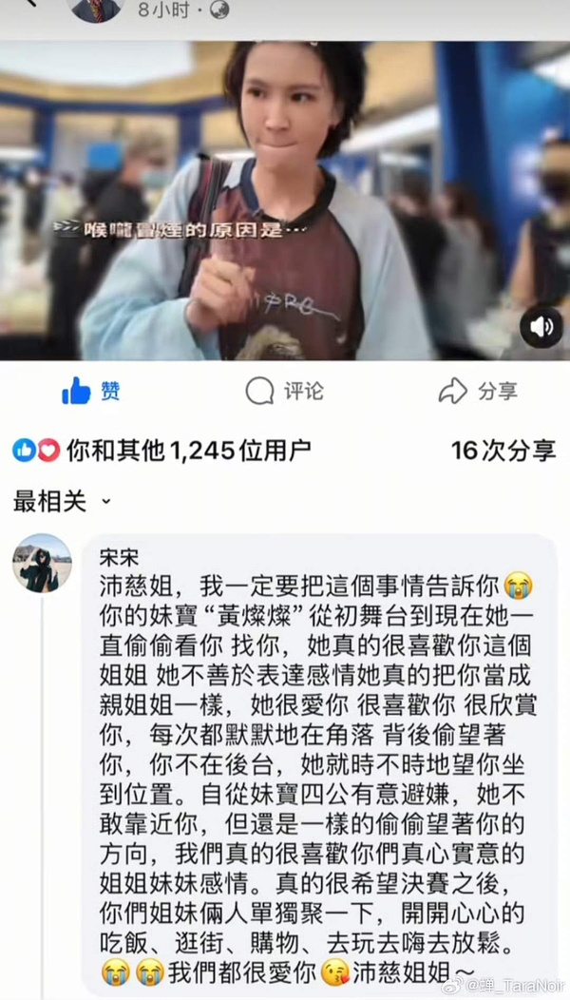
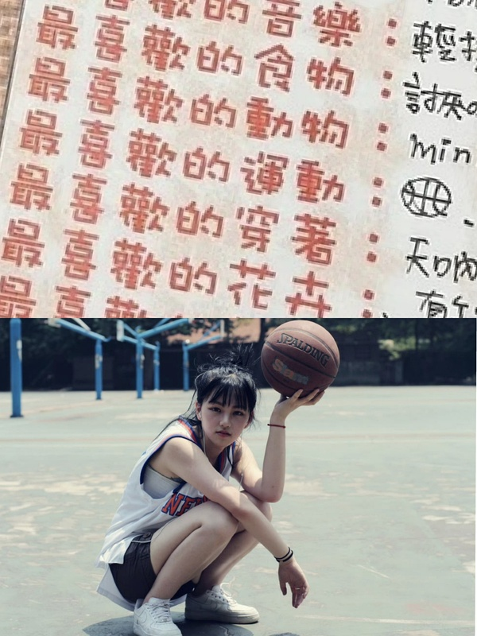
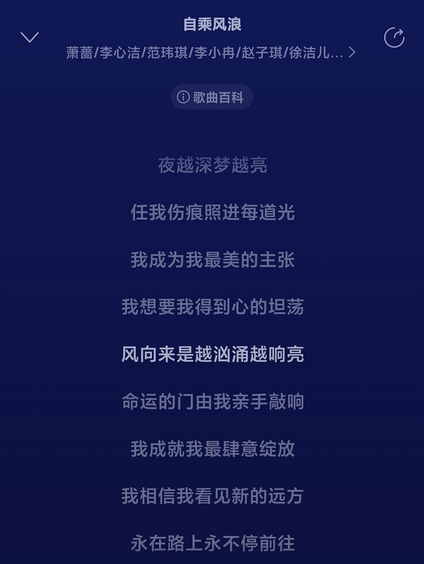
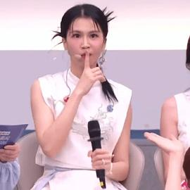

乘风2026｜目前为止曾沛慈最亲密的队友是谁？
-

Maya 2026-06-14 04:37:10 湖南
完全赞同 。已经有例外了，还要怎么样？难道我一生只能有一个朋友吗？。。。我真的很搞不懂。代入一下自己，我是我闺蜜的绝对例外。。。就是是那种明眼人看得出来她已经非常非常宠我，对我非常非常有耐心了。（虽然这个口是心非的女人，她一直说那只是因为有利益。）但是她也会有别的朋友啊，她也有另外的很好的朋友。这个一定要捆绑吗？又不是说真的在谈恋爱要1v1不能变心。我看见你的痛苦，我珍视你的感情，体谅你的难处，相互成全，在我能做到的最大限度里面对你最好。还不够？？？？？ ... 豆友295472573又看到五点了老师们
-

yy 2026-06-14 04:38:02 比利时
点了这栋楼里就是有各种立场的人啊，很多人发言压根没有抱着要正确的想法，抱着这种想法的人也有可能会说错话。觉得那句话说得不好看见就单独点出来吧，有啥必要鉴整栋楼的大风向的…这栋楼这么高不就是因为在这里可以更大胆地发言，而且大家对姐姐对彼此都更友好更包容吗。从大家发言都经常打括号叠甲肯定每个姐姐就能看出来大部分人都是抱着友好的善意在交流吧…但每个人的想法都会改变有走偏的时候，如果觉得说得不好也可以去沟通交流而不是判刑吧，包括f老师的改变不就很有意义吗…当然楼里确实有些人纯挑子我先说。 ... 🌙🦈很多人觉得跟自己不同的观点就是挑。每个人就是可以有自己的观点，只要不人身攻击都合理。
-
valieva's melo 2026-06-14 04:38:22 陕西
5.4w了omg
-

momo 2026-06-14 04:38:40 辽宁

Ww那边还真是挺温暖的。
-

-

水生浅梦 2026-06-14 04:40:45 浙江
半夜来爬楼给我看力竭了，这两天成群结队的不知道是来拆cp的还是来踩🥬的？是串子热演一辈子发不了财，是真情实感咯噔的我真没懂在咯噔些什么，到现在了🥬🍉的相处和情感还需要质疑吗？说🥬不坚定的或者说🍉退缩的我也不懂是在搞什么飞机，很多东西不是摆在台面上才存在，感情也不是天天用嘴巴说才显得真挚，两人首先都是独立的个体，一个30+一个40+思想很成熟，也不是做每件事都要麦，刻意麦反而难磕，真正让人感动的不就是她俩迸发的真心吗？又不是真ql没有为了满足谁的期待必须发糖的义务，浪姐也不是恋综，俩人需要考虑处理的事很多，我只知道四公两个人都把对方放在心里很重很重，对我来说一瞬即是永恒，而且真人cp的魅力也在于没有人能预知未来的走向，就连她们自己也不能，但一路走来节目相处和舆论之下的吊桥效应，两人的感情已经产生深度的联结，感情浓度一步一脚印，她们都是很好很珍惜真心的人，同时也是敏感的人，到现在已经确认了彼此的感情，不会有谁去怀疑是虚情假意，雪人后台两人聊了快10分钟，镜头之外只会有更多，哪怕是之后要避嫌也不过是要考虑很多东西，但已经建立起来的感情不会变，她们都不是假意营业的空心人，限定夏令营的美好不是只有我们能感受到，她们身处其中更是。可以不要随便发卖谁吗，一些毫无关联的东西臆想yy太多对两人0个好处，真的上头就调理一下自己，别太代入，过于投射解读也并不尊重她们，如果调理不好觉得磕不动就算了，强求求不得，一直咯噔踩来踩去干嘛呢，一定要谁按照什么方式去做才能证明什么吗？更何况我认为她们都有在用自己的方式去支持彼此，但她们都是人，人无完人，不是什么都能找到万全之策去达成一个理想化的cp关系，顺理成章的理想化并不好磕，真实的粗粝感才撼动人心。 ... 臻壹支持
-
-

-
豆友2401251635 2026-06-14 04:42:18 广东
赞同，就像我们一直无语的dwj不分场合摆摊，她也从来没说什么理智购买之类的，就是默认这些行为的。dwj为她花了钱，她更加不能做什么，我觉得她是想要抓住这些流量的，不管是好是坏，毕竟这可能是她离梦想最近的一次了。 ... 浪里个浪这个分析可能真的能解释通了我的困惑，舞bl大概率就是因为这些吧
-

熊 2026-06-14 04:42:29 江苏
爆笑
-

-
豆友295472573 2026-06-14 04:47:04 江西
其实我不磕cp，我只是单纯不理解在dw舞这么厉害的时候她顺应着去舞bl。娱乐圈这种顺应fs不当行为并不是好事，当然还得看之后她和团队是怎么处理的吧。她的实力跟bl真的做商业捆绑在一起未必是好事，如果只是交友，其实没必要这个时间点大张旗鼓 ... 豆友2401251635同意 🪷这时候其实我感觉有点莫名其妙了
-

祝余 2026-06-14 04:47:20 安徽
我也是，现在才知道原来是灿灿😢当时只觉得又惨又勇敢
-
-
祝余 2026-06-14 04:49:45 安徽
已品
-
豆友dimlqtC0GE 2026-06-14 04:49:58 北京
🍉是多么真诚的一人，真搞不懂dw说她爱营销 1.网友说她是七网一，梗多网快。在直播时，明明直接默认也没什么，笑笑过去了还能有炒作的空间和话题，还是认真解释说其他姐姐网也很快，有些点子也不是她自己的功劳，并且还介绍哪些姐姐的网快。 2.说她爱捆绑的人真应该看看“娜就有话说”，她说之前为了不让别人认为她蹭，不敢和yz说话，还是yz主动找她。那时候她都能认识到这个问题，自然不会有这种心思，践踏她真心的dw真应该好好反思一下。 3.偶然刷到有fs接她的视频，fs说辛苦了什么什么的，她边签名边无所谓的说一点不辛苦，闲的要死。如果之前我对她的认知是有活人感，那这个视频直接让我对她这个印象加深n倍
2 条回复
-

喜悦 2026-06-14 05:10:04 北京
🍉是多么真诚的一人，真搞不懂dw说她爱营销 1.网友说她是七网一，梗多网快。在直播时，明明直接默认也没什么，笑笑过去了还能有炒作的空间和话题，还是认真解释说其他姐姐网也很快，有些点子也不是她自己的功劳，并且还介绍哪些姐姐的网快。 2.说她爱捆绑的人真应该看看“娜就有话说”，她说之前为了不让别人认为她蹭，不敢和yz说话，还是yz主动找她。那时候她都能认识到这个问题，自然不会有这种心思，践踏她真心的dw真应该好好反思一下。 3.偶然刷到有fs接她的视频，fs说辛苦了什么什么的，她边签名边无所谓的说一点不辛苦，闲的要死。如果之前我对她的认知是有活人感，那这个视频直接让我对她这个印象加深n倍 ... 豆友dimlqtC0GE这么多年都没有营销过她和yz，客观来说yz和🥬的地位不一样吧在内娱，而且人俩都是演员呢🤷🏻
-

苏苏苏泽然 2026-06-14 18:57:34 湖北
🍉是多么真诚的一人，真搞不懂dw说她爱营销 1.网友说她是七网一，梗多网快。在直播时，明明直接默认也没什么，笑笑过去了还能有炒作的空间和话题，还是认真解释说其他姐姐网也很快，有些点子也不是她自己的功劳，并且还介绍哪些姐姐的网快。 2.说她爱捆绑的人真应该看看“娜就有话说”，她说之前为了不让别人认为她蹭，不敢和yz说话，还是yz主动找她。那时候她都能认识到这个问题，自然不会有这种心思，践踏她真心的dw真应该好好反思一下。 3.偶然刷到有fs接她的视频，fs说辛苦了什么什么的，她边签名边无所谓的说一点不辛苦，闲的要死。如果之前我对她的认知是有活人感，那这个视频直接让我对她这个印象加深n倍 ... 豆友dimlqtC0GE是的，她针对“是hcc带着姐姐们营业”解释过好几次，她从来不把这个点归成自己的功劳，并且强调是姐姐们本来就爱自己的粉丝，会去接受来自粉丝的建议和爱并反馈，而不是为了配合她而去饭撒等。当时刷到这个我就感觉这个小女孩挺真诚的！
-
-

不老的老实人 2026-06-14 04:50:09 广东

原来🍉还是个篮球girl 🥬最喜欢的 嘿嘿😋
-

-

-

蜜雪冰城甜蜜蜜 2026-06-14 04:52:11 河南
其实我不磕cp，我只是单纯不理解在dw舞这么厉害的时候她顺应着去舞bl。娱乐圈这种顺应fs不当行为并不是好事，当然还得看之后她和团队是怎么处理的吧。她的实力跟bl真的做商业捆绑在一起未必是好事，如果只是交友，其实没必要这个时间点大张旗鼓 ... 豆友2401251635感觉dw都还没出社会，还处在学生时代那种对未来很纯粹非黑即白的乌托邦幻想中…现实里的成年人没有dw想的那么轰轰烈烈弱水三千只取一瓢，dw完全是把闺蜜当爱人了
-

ZENky 2026-06-14 04:52:30 广东
这点我都没敢讲...一共组了两次队一次完成度惊人舞台也牛但是又被麻辣又被压分压热度,这次选人直接缝针,太玄了... 🌈一点红利没吃到还受了伤...谁家倒霉熊五公选人的热搜会变成是缝了九针啊.. 本来美美吃四公百家饭结果搞出这么震天动地的节奏我也是一整个无语住了 ... _Aotaro我在各个地方分析过了。。。🌈挺惨的，跟aq类型冲突了，aq是天娱自己人，刚签回来的，肯定打压🌈，本来让她来也是最后补位的，要的就是这个效果。
-

豆友294997980 2026-06-14 04:52:57 江苏
哎dw讨厌🍉就会讨厌一切和她有关的东西，并且在她们眼里她们姐姐是top是断层诶，已经是大爆人物了，哪需要这种感情线，只会觉得🍉在蹭，没办法，机会抓不住自然就会溜走
-

不喜欢苹果 2026-06-14 04:54:55 江苏
她是杨天真公司的 真不至于 只是说她和aq都是选秀出道的 但是她初舞台和aq真的差了不是一点半点 aq确实太强了 但你要说她没yx 不可能
-

momo 2026-06-14 04:57:56 广东
其实我很希望pc能有所行动，前几天疯狂避嫌的时候我就想着，如果她继续无动于衷那我就安安静静的脱粉了，结果她又发了vlog，反正我还是坚持看后续，如果菜不主动点的话，我也替🍉不值，还是那句，火山的爱给谁都热烈 ... 生陌看那么多人或明或暗地劝要理性别咯噔别臆测要不暂时出楼别磕要护楼，你还想不明白坚持觉得是不让发表言论别人是dw是捂嘴是把你打成wpg。实在是力竭了，翻了好多页找到你的各种发言，到这条源头来给你解释下为什么大家会觉得是演是挑是咯噔。 首先我们能在这里讨论就是承认了🥬🍉之间是有真情在的，无论她们各自有什么其他的交好姐姐，她俩之间的感情不容置疑“谢谢你姐姐”“我以她为荣”还需要说什么？ 你觉得dw当道是对🥬不利的事情大家都讨论过，这个是合理前提，但是把放弃避嫌公开支持🍉当做整顿饭圈的唯一选项是不是有点太cpn了？成年人的世界就是有很多需要考量，有些事情时机不对做起来就是要慎重，🥬是来追求事业的，🍉也是，她们不是来找对象的，你说的谁谁的爱给谁都热烈，是不是太把她们性缘化，忽视了🥬🍉在认真对待自身发展理性思考如何解决当前局面的主体性？还替🍉不值，说的好像🥬是什么负心汉一样，这不是发卖是什么？真的让人觉得非常不适，这不就是dw眼中的只心疼某一边忽视另一边的wpg么。 已经很多人在劝了，如果你还是想不通，至少先暂时别再发言，放下cpn去看其他人的理性言论，会有更充分和全面客观的视角，或者先离开楼冷静一下吧，🥬🍉都是好人，别再给她们招黑了
-
-
momo 2026-06-14 05:00:02 广东
这楼里很多人不允许别人有自己的感受，但凡有点自己的感受就把你打成wpg，其实这种人也挺烦的，我觉得就是某家wf，本来就是一个讨论的楼，我们又不是圣人，怎么会没有自己的看法呢，只要没有攻击任何姐姐，我觉得想说什么说什么 ... 生陌见上条回复
-
-
不喜欢苹果 2026-06-14 05:02:00 江苏
这不是个乐子楼吗 言论自由吧 怎么有人还上纲上线了
-
豆友295472573 2026-06-14 05:02:51 江西
是的，我觉得有秩序外那一秒就已经很够了感觉 dw还很像那种小孩子你跟我好我就得必须跟你好不然我们就不是最好的朋友
-

aven 2026-06-14 05:05:17 四川
看那么多人或明或暗地劝要理性别咯噔别臆测要不暂时出楼别磕要护楼，你还想不明白坚持觉得是不让发表言论别人是dw是捂嘴是把你打成wpg。实在是力竭了，翻了好多页找到你的各种发言，到这条源头来给你解释下为什么大家会觉得是演是挑是咯噔。 首先我们能在这里讨论就是承认了🥬🍉之间是有真情在的，无论她们各自有什么其他的交好姐姐，她俩之间的感情不容置疑“谢谢你姐姐”“我以她为荣”还需要说什么？ 你觉得dw当道是对🥬不利的事情大家都讨论过，这个是合理前提，但是把放弃避嫌公开支持🍉当做整顿饭圈的唯一选项是不是有点太cpn了？成年人的世界就是有很多需要考量，有些事情时机不对做起来就是要慎重，🥬是来追求事业的，🍉也是，她们不是来找对象的，你说的谁谁的爱给谁都热烈，是不是太把她们性缘化，忽视了🥬🍉在认真对待自身发展理性思考如何解决当前局面的主体性？还替🍉不值，说的好像🥬是什么负心汉一样，这不是发卖是什么？真的让人觉得非常不适，这不就是dw眼中的只心疼某一边忽视另一边的wpg么。 已经很多人在劝了，如果你还是想不通，至少先暂时别再发言，放下cpn去看其他人的理性言论，会有更充分和全面客观的视角，或者先离开楼冷静一下吧，🥬🍉都是好人，别再给她们招黑了 ... momo我也觉得，理智一点吧，能看到真挚的感情已经很好了 不要在幻想里道德绑架
-
豆友294997980 2026-06-14 05:05:29 江苏
aq再怎么说也是全能ace吧，比🌈强多了（不是拉踩，整体感受而已），🌈就是唱歌方面弱了一点，但跳舞包括她人都是很好的 -

掉链子猫 2026-06-14 05:08:03 北京
其实还好啦姐妹 在这里说是因为这栋楼是为数不多能够说真心话的地方了 发表一些疑惑也是因为相信其他人可以有另一个角度 让自己走出死胡同 但也希望大家停留在理性讨论的层面 不要变成dwjj那种人 也不要真的去攻击任何一个姐姐 大家都是很好的 ... momo哈哈哈哈，我刚开始看你这个咯噔是有点迷惑的，不过这一整个楼中楼爬下来，我觉得大家还是在理性范围内，非常正常。楼中楼我都爬了1小时，不得不感慨这个楼的氛围确实是好，真的会让人超有表达欲。我爬完以后其实就一个感受，dw正在真切的伤害🥬的路人缘，甚至都不止路人缘了，还包括真心喜欢她的fs，这一整个楼中楼的咯噔，根源其实还是来自于这一次dw闹出来的风波没有被很好的处理。 dw能肆无忌惮贴脸🥬让她拆组，我们这些理智的fs只能躲到这栋楼里抱团取暖偶尔还要内耗。我是建议，处理这件事需要时间，在现阶段你觉得嗑的难受，就冷静冷静，线上听听她的歌，线下看看她的演出，甚至脱粉也罢，保持好心情，现实生活才最重要。 最后呢，针对这件事的处理，🥬真的努力了，几篇小作文都在强调要理智要单纯，奈何dw听不懂人话，只能是期望华研和她本人都能意识到这是个大问题，后续想出更好的办法去做引导吧。
-

-
ZENky 2026-06-14 05:09:10 广东
反正我觉得她甚至都不会出道，然后没有一次高分舞台，三公四公都压分，不是有意为之就是倒霉蛋
-
🌙🦈 2026-06-14 05:09:59 重庆
其实我觉得大家之所以有时候会真情实感地发出一些有点咯噔的言论，是因为我们还不够了解她们。大部分人都是在浪才开始认识🥬🍉的，而真人秀本身就是在放大一部分性格，在这样的镜头前，巨大的竞技夏令营下，没有人是完完全全真实的，更何况还有🥭的剪辑在发力。我们所看见的只是一部分的她们，但人之所以有魅力就是因为每个人都无比复杂和立体，即使是自己和亲人，也没有办法说出百分百了解吧…所以面对同样的行为每个人对此的理解和判断是不同的，这非常正常。就像同样的🥬🍉，在cz看来是恶人真心，在有的人看来是两个天使一样的人，这本身就很极与极了，而且也说明了两个人的情感浓度之高有目共睹吧。所以一直在探讨两个人是不可避免地会产生一些揣测和想象的，其实有时候真的要保持一点绝望，对两个人产生过高的期待也是在给自己养蛊。其实我也不太清楚我想讲什么，大家意会一下吧。
3 条回复
-
aven 2026-06-14 05:15:26 四川
其实我觉得大家之所以有时候会真情实感地发出一些有点咯噔的言论，是因为我们还不够了解她们。大部分人都是在浪才开始认识🥬🍉的，而真人秀本身就是在放大一部分性格，在这样的镜头前，巨大的竞技夏令营下，没有人是完完全全真实的，更何况还有🥭的剪辑在发力。我们所看见的只是一部分的她们，但人之所以有魅力就是因为每个人都无比复杂和立体，即使是自己和亲人，也没有办法说出百分百了解吧…所以面对同样的行为每个人对此的理解和判断是不同的，这非常正常。就像同样的🥬🍉，在cz看来是恶人真心，在有的人看来是两个天使一样的人，这本身就很极与极了，而且也说明了两个人的情感浓度之高有目共睹吧。所以一直在探讨两个人是不可避免地会产生一些揣测和想象的，其实有时候真的要保持一点绝望，对两个人产生过高的期待也是在给自己养蛊。其实我也不太清楚我想讲什么，大家意会一下吧。 ... 🌙🦈明白你的意思 保持绝望就好了，在看过雪人之后真挚感情过后不要有别的期待了，大家都是三十岁➕的成年人，都有自己的事业和别的朋友，粉丝理性看待
-
🌙🦈 2026-06-14 05:23:40 重庆
是的，我觉得大家都很喜欢两个人然后在了解有限的情况下去讨论不可避免地会产生很多误解，这其实有点不可避免。而且我们没法代替两个人去做选择，所以就让她们顺其自然发展就好了。大家不要代替任何一方去给另一个人下判断吧，尤其是有些不太好的语言。只是我也不想说得太绝对，因为就好像在限制这个发言的自由度。
-

momo 2026-06-14 07:31:52 安徽
其实我觉得大家之所以有时候会真情实感地发出一些有点咯噔的言论，是因为我们还不够了解她们。大部分人都是在浪才开始认识🥬🍉的，而真人秀本身就是在放大一部分性格，在这样的镜头前，巨大的竞技夏令营下，没有人是完完全全真实的，更何况还有🥭的剪辑在发力。我们所看见的只是一部分的她们，但人之所以有魅力就是因为每个人都无比复杂和立体，即使是自己和亲人，也没有办法说出百分百了解吧…所以面对同样的行为每个人对此的理解和判断是不同的，这非常正常。就像同样的🥬🍉，在cz看来是恶人真心，在有的人看来是两个天使一样的人，这本身就很极与极了，而且也说明了两个人的情感浓度之高有目共睹吧。所以一直在探讨两个人是不可避免地会产生一些揣测和想象的，其实有时候真的要保持一点绝望，对两个人产生过高的期待也是在给自己养蛊。其实我也不太清楚我想讲什么，大家意会一下吧。 ... 🌙🦈同意 ⛄️的感情浓度太高 有些人太过上头了 可以稍微冷静下
-
-
ZENky 2026-06-14 05:11:13 广东
我意思是按照Dw的意思理解的话，有更多更好的选择可以蹭都没蹭…
-
blueWings (等。) 2026-06-14 05:12:44 上海
磕得太真情实感 刚刚抽了占星骰子 因为答案太过消极而抽离出来了一些 虽然不一定准 大家可以随便看个乐子
问题一：两个人这个月会公开互动交好吗？ 答案：海王摩羯10宫
海王星是一种迷糊的状态 这个月他们展现给外界的关系，会是处于一种公开了，但又没有完全说明白的暧昧状态。这种和好缺乏真正的精神蜕变。私底下，摩羯座的界限依然横在两个人之间，他们只是达成了一种“为了大局（10宫）的体面互动。
问题二：她们现在私下关系如何？ 答案：天王巨蟹1
1宫是最真实的身体反射。巨蟹座在这个位置，说明她们私底下只要面对彼此，空气里就弥漫着一股极度紧绷的磁场。巨蟹座本能地想要保护自己、极度敏感，满地都是情绪碎片，筑起厚厚的防御墙。天王星具有极强的排他性和决绝感，代表物理上的隔离和断裂。关系陷入冷暴力和情绪防御。
问题三：🥬对🍉的感觉？答案：土星巨蟹9宫
巨蟹座本代表着泛滥的情感、心疼和保护欲。但土星死死地压在巨蟹座上面，把所有的情绪都变成了一座冰山。9宫是高度，也是远方，🥬把两个人的关系上升到大局的层面去思考，觉得保持距离才是对彼此最好的方式。
“我很想关心你，但我不能，我必须克制住自己，保持理性的距离。”
问题四：🍉对🥬的感觉？答案：月亮双鱼1宫
月亮在双鱼座是极其感性、边界模糊且带有强烈牺牲感的， 1宫是最赤裸的真实和肉体反射。她在这段关系里，承担了绝大部分情绪的“过载”与“内耗”。她没有🥬那种9宫视角，她被困在 1 宫的肉体深渊和情绪漩涡中，在🥬的土星冰山前，🍉像一个脆弱的没有皮肤的婴儿。
（太绝望了我继续追问想得到一些希望）
问题五：这段关系还会有转机吗？ 答案：水星射手10宫
私下的亲密或许很难回去了，但她们或许会迎来一个“社会关系”上的神级转机。 这把骰子给出的解药是：用射手座的健忘和豁达，去消解巨蟹座的敏感与疼痛；用10宫水星的光明正大，去击碎私底下的冷暴力废墟。 未来的转机，是她们终于可以不用再扮演海王星的牵线木偶，而是作为两个独立的、发光的个体，在10宫的舞台上坦坦荡荡地看着对方，用眼神说一句：“祝你在你的未来里，飞得更高。”
以上是借助AI解读的骰子 仅供参考 但保持绝望
28 条回复
-
蜜雪冰城甜蜜蜜 2026-06-14 05:46:45 河南
磕得太真情实感 刚刚抽了占星骰子 因为答案太过消极而抽离出来了一些 虽然不一定准 大家可以随便看个乐子 问题一：两个人这个月会公开互动交好吗？ 答案：海王摩羯10宫 海王星是一种迷糊的状态 这个月他们展现给外界的关系，会是处于一种公开了，但又没有完全说明白的暧昧状态。这种和好缺乏真正的精神蜕变。私底下，摩羯座的界限依然横在两个人之间，他们只是达成了一种“为了大局（10宫）的体面互动。 问题二：她们现在私下关系如何？ 答案：天王巨蟹1 1宫是最真实的身体反射。巨蟹座在这个位置，说明她们私底下只要面对彼此，空气里就弥漫着一股极度紧绷的磁场。巨蟹座本能地想要保护自己、极度敏感，满地都是情绪碎片，筑起厚厚的防御墙。天王星具有极强的排他性和决绝感，代表物理上的隔离和断裂。关系陷入冷暴力和情绪防御。 问题三：🥬对🍉的感觉？答案：土星巨蟹9宫 巨蟹座本代表着泛滥的情感、心疼和保护欲。但土星死死地压在巨蟹座上面，把所有的情绪都变成了一座冰山。9宫是高度，也是远方，🥬把两个人的关系上升到大局的层面去思考，觉得保持距离才是对彼此最好的方式。 “我很想关心你，但我不能，我必须克制住自己，保持理性的距离。” 问题四：🍉对🥬的感觉？答案：月亮双鱼1宫 月亮在双鱼座是极其感性、边界模糊且带有强烈牺牲感的， 1宫是最赤裸的真实和肉体反射。她在这段关系里，承担了绝大部分情绪的“过载”与“内耗”。她没有🥬那种9宫视角，她被困在 1 宫的肉体深渊和情绪漩涡中，在🥬的土星冰山前，🍉像一个脆弱的没有皮肤的婴儿。 （太绝望了我继续追问想得到一些希望） 问题五：这段关系还会有转机吗？ 答案：水星射手10宫 私下的亲密或许很难回去了，但她们或许会迎来一个“社会关系”上的神级转机。 这把骰子给出的解药是：用射手座的健忘和豁达，去消解巨蟹座的敏感与疼痛；用10宫水星的光明正大，去击碎私底下的冷暴力废墟。 未来的转机，是她们终于可以不用再扮演海王星的牵线木偶，而是作为两个独立的、发光的个体，在10宫的舞台上坦坦荡荡地看着对方，用眼神说一句：“祝你在你的未来里，飞得更高。” 以上是借助AI解读的骰子 仅供参考 但保持绝望 ... blueWings
不接
-

豆友uwS3Tw0BJ4 2026-06-14 11:12:17 江苏
磕得太真情实感 刚刚抽了占星骰子 因为答案太过消极而抽离出来了一些 虽然不一定准 大家可以随便看个乐子 问题一：两个人这个月会公开互动交好吗？ 答案：海王摩羯10宫 海王星是一种迷糊的状态 这个月他们展现给外界的关系，会是处于一种公开了，但又没有完全说明白的暧昧状态。这种和好缺乏真正的精神蜕变。私底下，摩羯座的界限依然横在两个人之间，他们只是达成了一种“为了大局（10宫）的体面互动。 问题二：她们现在私下关系如何？ 答案：天王巨蟹1 1宫是最真实的身体反射。巨蟹座在这个位置，说明她们私底下只要面对彼此，空气里就弥漫着一股极度紧绷的磁场。巨蟹座本能地想要保护自己、极度敏感，满地都是情绪碎片，筑起厚厚的防御墙。天王星具有极强的排他性和决绝感，代表物理上的隔离和断裂。关系陷入冷暴力和情绪防御。 问题三：🥬对🍉的感觉？答案：土星巨蟹9宫 巨蟹座本代表着泛滥的情感、心疼和保护欲。但土星死死地压在巨蟹座上面，把所有的情绪都变成了一座冰山。9宫是高度，也是远方，🥬把两个人的关系上升到大局的层面去思考，觉得保持距离才是对彼此最好的方式。 “我很想关心你，但我不能，我必须克制住自己，保持理性的距离。” 问题四：🍉对🥬的感觉？答案：月亮双鱼1宫 月亮在双鱼座是极其感性、边界模糊且带有强烈牺牲感的， 1宫是最赤裸的真实和肉体反射。她在这段关系里，承担了绝大部分情绪的“过载”与“内耗”。她没有🥬那种9宫视角，她被困在 1 宫的肉体深渊和情绪漩涡中，在🥬的土星冰山前，🍉像一个脆弱的没有皮肤的婴儿。 （太绝望了我继续追问想得到一些希望） 问题五：这段关系还会有转机吗？ 答案：水星射手10宫 私下的亲密或许很难回去了，但她们或许会迎来一个“社会关系”上的神级转机。 这把骰子给出的解药是：用射手座的健忘和豁达，去消解巨蟹座的敏感与疼痛；用10宫水星的光明正大，去击碎私底下的冷暴力废墟。 未来的转机，是她们终于可以不用再扮演海王星的牵线木偶，而是作为两个独立的、发光的个体，在10宫的舞台上坦坦荡荡地看着对方，用眼神说一句：“祝你在你的未来里，飞得更高。” 以上是借助AI解读的骰子 仅供参考 但保持绝望 ... blueWings我咋感觉还是有点准的，个人分析如下，纯当看个乐子；
首先🥬和🍉都是高敏人群，配得感低，但又有点差别。🥬想要被爱的确定性，所以音乐节上说：“我问一个比较冒险的问题，来看我的人举手🙋”。然后呢，🥬对于喜欢她是因为她唱歌好听，还是是因为她可爱的像只狗狗，她本人是不介意的，潜移默化地她认定别人喜欢她一定是因为她身上的某个特质，如果这个特质没有了，那么她不值得被爱；所以她的舞台很拼命，她在vlog或者后台切片里，也喜欢搞怪；说回🍉，不一样的点在于，🍉大方的表达并追寻她喜欢的人，但她有点孤勇，自卑，她对真爱付出真心并不抱任何期待别人有回应，只央求的是不要被抛弃，一公小考拿了第三，比第二只低了一分，按理说是不错的成绩，但她还是哭了；当她的真心被回应，即便只是一句轻飘飘的谢谢，🍉也能开心好久；但🍉对真爱以下层级的好友又是另一个模样，她可以有自己高傲的自尊，去寻求一个被选择的确定感。
慈安灿两人的关系里，多多少少两人的定位是重复的，都是要感受到被对方爱着，这关系才能继续下去。一开始🍉的示爱让🥬很开心，🥬的鼓励肯定也让🍉欣喜，两人也迅速成为了好朋友，一公二公几乎是粘在一起的，但因为二公篇章太难唱，🍉逐渐意识到自己在拖后腿，放假也在苦练，以及那时网上可能有舆论在说🍉在抱大腿吸血，所以三公拆组；🥬三公遇到了师姐偶像，慕强让她发自内心的想要博得她们的喜欢，三公真的是拼了老命，身体也透支；到了四公选组，遇到秩序外的一秒，也还是两人在彼此身上寻找爱的证据；转折点到了雪人换人事件，🍉以回避的方式，想要默默扛下所有，不给姐姐增添压力，保护姐姐的嗓子；但让🥬感觉到的是爱的流失，让她心神不宁；这拧巴的情绪甚至延续到了五公小考；这里面非常tricky的点在于🥬这时候越对她俩间的感情质疑，她越焦虑，她从🍉那边失去的越多，她越要从别处找补回来，所以才会去汪汪汪；而🍉呢，越看到🥬贴近她，她避的越开，因为她不想看到她爱的人被伤害，尤其是因为自己，但她的回避她自己也会伤心难过，这回避的情绪转接到真爱以下的其他人，增加互动来做情绪释放，也无形伤害到🥬（你们玩的那么好，都不带我了）；🥬也越发焦虑，简直是死亡的循环；两人按照这个方向推，五公基本上是避完了。完全不确定是不是雪人后，🥬🍉只是聊了，但没有完完全全的聊透。
转机在哪呢，五公结束，🍉组拿了第一，不自卑了，🍉就会去🥬那里得瑟，你看我也是有跟你站在一块的资本呢；那么五公后两人要还是在一队，互动也能多起来；要是🍉五公砸了，🍉就还是会回避，因为她的配得感低。
-

WAITFORIT 2026-06-14 11:17:18 上海
我咋感觉还是有点准的，个人分析如下，纯当看个乐子； 首先🥬和🍉都是高敏人群，配得感低，但又有点差别。🥬想要被爱的确定性，所以音乐节上说：“我问一个比较冒险的问题，来看我的人举手🙋”。然后呢，🥬对于喜欢她是因为她唱歌好听，还是是因为她可爱的像只狗狗，她本人是不介意的，潜移默化地她认定别人喜欢她一定是因为她身上的某个特质，如果这个特质没有了，那么她不值得被爱；所以她的舞台很拼命，她在vlog或者后台切片里，也喜欢搞怪；说回🍉，不一样的点在于，🍉大方的表达并追寻她喜欢的人，但她有点孤勇，自卑，她对真爱付出真心并不抱任何期待别人有回应，只央求的是不要被抛弃，一公小考拿了第三，比第二只低了一分，按理说是不错的成绩，但她还是哭了；当她的真心被回应，即便只是一句轻飘飘的谢谢，🍉也能开心好久；但🍉对真爱以下层级的好友又是另一个模样，她可以有自己高傲的自尊，去寻求一个被选择的确定感。 慈安灿两人的关系里，多多少少两人的定位是重复的，都是要感受到被对方爱着，这关系才能继续下去。一开始🍉的示爱让🥬很开心，🥬的鼓励肯定也让🍉欣喜，两人也迅速成为了好朋友，一公二公几乎是粘在一起的，但因为二公篇章太难唱，🍉逐渐意识到自己在拖后腿，放假也在苦练，以及那时网上可能有舆论在说🍉在抱大腿吸血，所以三公拆组；🥬三公遇到了师姐偶像，慕强让她发自内心的想要博得她们的喜欢，三公真的是拼了老命，身体也透支；到了四公选组，遇到秩序外的一秒，也还是两人在彼此身上寻找爱的证据；转折点到了雪人换人事件，🍉以回避的方式，想要默默扛下所有，不给姐姐增添压力，保护姐姐的嗓子；但让🥬感觉到的是爱的流失，让她心神不宁；这拧巴的情绪甚至延续到了五公小考；这里面非常tricky的点在于🥬这时候越对她俩间的感情质疑，她越焦虑，她从🍉那边失去的越多，她越要从别处找补回来，所以才会去汪汪汪；而🍉呢，越看到🥬贴近她，她避的越开，因为她不想看到她爱的人被伤害，尤其是因为自己，但她的回避她自己也会伤心难过，这回避的情绪转接到真爱以下的其他人，增加互动来做情绪释放，也无形伤害到🥬（你们玩的那么好，都不带我了）；🥬也越发焦虑，简直是死亡的循环；两人按照这个方向推，五公基本上是避完了。完全不确定是不是雪人后，🥬🍉只是聊了，但没有完完全全的聊透。 转机在哪呢，五公结束，🍉组拿了第一，不自卑了，🍉就会去🥬那里得瑟，你看我也是有跟你站在一块的资本呢；那么五公后两人要还是在一队，互动也能多起来；要是🍉五公砸了，🍉就还是会回避，因为她的配得感低。 ... 豆友uwS3Tw0BJ4残酷又现实的分析，高敏人士建立亲密关系就是如此复杂又拧巴
-

Sisyphus (有什么值得我细心浇灌) 2026-06-14 11:20:53 浙江
我咋感觉还是有点准的，个人分析如下，纯当看个乐子； 首先🥬和🍉都是高敏人群，配得感低，但又有点差别。🥬想要被爱的确定性，所以音乐节上说：“我问一个比较冒险的问题，来看我的人举手🙋”。然后呢，🥬对于喜欢她是因为她唱歌好听，还是是因为她可爱的像只狗狗，她本人是不介意的，潜移默化地她认定别人喜欢她一定是因为她身上的某个特质，如果这个特质没有了，那么她不值得被爱；所以她的舞台很拼命，她在vlog或者后台切片里，也喜欢搞怪；说回🍉，不一样的点在于，🍉大方的表达并追寻她喜欢的人，但她有点孤勇，自卑，她对真爱付出真心并不抱任何期待别人有回应，只央求的是不要被抛弃，一公小考拿了第三，比第二只低了一分，按理说是不错的成绩，但她还是哭了；当她的真心被回应，即便只是一句轻飘飘的谢谢，🍉也能开心好久；但🍉对真爱以下层级的好友又是另一个模样，她可以有自己高傲的自尊，去寻求一个被选择的确定感。 慈安灿两人的关系里，多多少少两人的定位是重复的，都是要感受到被对方爱着，这关系才能继续下去。一开始🍉的示爱让🥬很开心，🥬的鼓励肯定也让🍉欣喜，两人也迅速成为了好朋友，一公二公几乎是粘在一起的，但因为二公篇章太难唱，🍉逐渐意识到自己在拖后腿，放假也在苦练，以及那时网上可能有舆论在说🍉在抱大腿吸血，所以三公拆组；🥬三公遇到了师姐偶像，慕强让她发自内心的想要博得她们的喜欢，三公真的是拼了老命，身体也透支；到了四公选组，遇到秩序外的一秒，也还是两人在彼此身上寻找爱的证据；转折点到了雪人换人事件，🍉以回避的方式，想要默默扛下所有，不给姐姐增添压力，保护姐姐的嗓子；但让🥬感觉到的是爱的流失，让她心神不宁；这拧巴的情绪甚至延续到了五公小考；这里面非常tricky的点在于🥬这时候越对她俩间的感情质疑，她越焦虑，她从🍉那边失去的越多，她越要从别处找补回来，所以才会去汪汪汪；而🍉呢，越看到🥬贴近她，她避的越开，因为她不想看到她爱的人被伤害，尤其是因为自己，但她的回避她自己也会伤心难过，这回避的情绪转接到真爱以下的其他人，增加互动来做情绪释放，也无形伤害到🥬（你们玩的那么好，都不带我了）；🥬也越发焦虑，简直是死亡的循环；两人按照这个方向推，五公基本上是避完了。完全不确定是不是雪人后，🥬🍉只是聊了，但没有完完全全的聊透。 转机在哪呢，五公结束，🍉组拿了第一，不自卑了，🍉就会去🥬那里得瑟，你看我也是有跟你站在一块的资本呢；那么五公后两人要还是在一队，互动也能多起来；要是🍉五公砸了，🍉就还是会回避，因为她的配得感低。 ... 豆友uwS3Tw0BJ4我终于知道为啥我不喜欢三公了。因为🥬太累了，肉眼可见的累，我听一样的月光都听哭了，从来没听过她这种接近碎掉的声音。红人粉可能要的是她第一，可是我们歌粉真的只想她保持喉咙，以后接着唱歌，我考古了她很多，以前她不是三公这样拼命的性格的，都是乐呵呵，有人来听她唱歌她就很开心，不是说突破自己不好，但是真的心疼她了，五公听到她拿了第一，居然说更好的服务粉丝，真是🆘了。讨好型人格直接上线了，我真希望红人粉来了你们可以闹，但是真别走了，走了她真会难过的
-

-

许愿小怀 2026-06-14 11:23:53 广东
我终于知道为啥我不喜欢三公了。因为🥬太累了，肉眼可见的累，我听一样的月光都听哭了，从来没听过她这种接近碎掉的声音。红人粉可能要的是她第一，可是我们歌粉真的只想她保持喉咙，以后接着唱歌，我考古了她很多，以前她不是三公这样拼命的性格的，都是乐呵呵，有人来听她唱歌她就很开心，不是说突破自己不好，但是真的心疼她了，五公听到她拿了第一，居然说更好的服务粉丝，真是🆘了。讨好型人格直接上线了，我真希望红人粉来了你们可以闹，但是真别走了，走了她真会难过的 ... Sisyphus我受不了了……其他再大真的大不过她身体健康……🥲🥲🥲
-

生抽没有酱 2026-06-14 11:25:43 湖南
我咋感觉还是有点准的，个人分析如下，纯当看个乐子； 首先🥬和🍉都是高敏人群，配得感低，但又有点差别。🥬想要被爱的确定性，所以音乐节上说：“我问一个比较冒险的问题，来看我的人举手🙋”。然后呢，🥬对于喜欢她是因为她唱歌好听，还是是因为她可爱的像只狗狗，她本人是不介意的，潜移默化地她认定别人喜欢她一定是因为她身上的某个特质，如果这个特质没有了，那么她不值得被爱；所以她的舞台很拼命，她在vlog或者后台切片里，也喜欢搞怪；说回🍉，不一样的点在于，🍉大方的表达并追寻她喜欢的人，但她有点孤勇，自卑，她对真爱付出真心并不抱任何期待别人有回应，只央求的是不要被抛弃，一公小考拿了第三，比第二只低了一分，按理说是不错的成绩，但她还是哭了；当她的真心被回应，即便只是一句轻飘飘的谢谢，🍉也能开心好久；但🍉对真爱以下层级的好友又是另一个模样，她可以有自己高傲的自尊，去寻求一个被选择的确定感。 慈安灿两人的关系里，多多少少两人的定位是重复的，都是要感受到被对方爱着，这关系才能继续下去。一开始🍉的示爱让🥬很开心，🥬的鼓励肯定也让🍉欣喜，两人也迅速成为了好朋友，一公二公几乎是粘在一起的，但因为二公篇章太难唱，🍉逐渐意识到自己在拖后腿，放假也在苦练，以及那时网上可能有舆论在说🍉在抱大腿吸血，所以三公拆组；🥬三公遇到了师姐偶像，慕强让她发自内心的想要博得她们的喜欢，三公真的是拼了老命，身体也透支；到了四公选组，遇到秩序外的一秒，也还是两人在彼此身上寻找爱的证据；转折点到了雪人换人事件，🍉以回避的方式，想要默默扛下所有，不给姐姐增添压力，保护姐姐的嗓子；但让🥬感觉到的是爱的流失，让她心神不宁；这拧巴的情绪甚至延续到了五公小考；这里面非常tricky的点在于🥬这时候越对她俩间的感情质疑，她越焦虑，她从🍉那边失去的越多，她越要从别处找补回来，所以才会去汪汪汪；而🍉呢，越看到🥬贴近她，她避的越开，因为她不想看到她爱的人被伤害，尤其是因为自己，但她的回避她自己也会伤心难过，这回避的情绪转接到真爱以下的其他人，增加互动来做情绪释放，也无形伤害到🥬（你们玩的那么好，都不带我了）；🥬也越发焦虑，简直是死亡的循环；两人按照这个方向推，五公基本上是避完了。完全不确定是不是雪人后，🥬🍉只是聊了，但没有完完全全的聊透。 转机在哪呢，五公结束，🍉组拿了第一，不自卑了，🍉就会去🥬那里得瑟，你看我也是有跟你站在一块的资本呢；那么五公后两人要还是在一队，互动也能多起来；要是🍉五公砸了，🍉就还是会回避，因为她的配得感低。 ... 豆友uwS3Tw0BJ4朋友，我支持你去写同人文。虽然个人感觉以她们俩直来直往的个性，现实大概率不是这样，但你是真的会写内心戏。起飞吧，皮卡丘！
-
-

-

湛蓝😉 2026-06-14 11:32:44 江西
我终于知道为啥我不喜欢三公了。因为🥬太累了，肉眼可见的累，我听一样的月光都听哭了，从来没听过她这种接近碎掉的声音。红人粉可能要的是她第一，可是我们歌粉真的只想她保持喉咙，以后接着唱歌，我考古了她很多，以前她不是三公这样拼命的性格的，都是乐呵呵，有人来听她唱歌她就很开心，不是说突破自己不好，但是真的心疼她了，五公听到她拿了第一，居然说更好的服务粉丝，真是🆘了。讨好型人格直接上线了，我真希望红人粉来了你们可以闹，但是真别走了，走了她真会难过的 ... Sisyphus三公我看的很累很心疼，尽管舞台丰富，但🥬真的是肉眼可见的疲惫，嗓子也是，加上节目组还压票，🥬甚至陷入自我怀疑自我否定中，给人一种努力和回报是没有什么关联的感觉，不过还好调整过来了，不可否认队友都很好，但真的看得人心里非常难受。
-
-
豆友295472573 2026-06-14 11:38:49 江西
我咋感觉还是有点准的，个人分析如下，纯当看个乐子； 首先🥬和🍉都是高敏人群，配得感低，但又有点差别。🥬想要被爱的确定性，所以音乐节上说：“我问一个比较冒险的问题，来看我的人举手🙋”。然后呢，🥬对于喜欢她是因为她唱歌好听，还是是因为她可爱的像只狗狗，她本人是不介意的，潜移默化地她认定别人喜欢她一定是因为她身上的某个特质，如果这个特质没有了，那么她不值得被爱；所以她的舞台很拼命，她在vlog或者后台切片里，也喜欢搞怪；说回🍉，不一样的点在于，🍉大方的表达并追寻她喜欢的人，但她有点孤勇，自卑，她对真爱付出真心并不抱任何期待别人有回应，只央求的是不要被抛弃，一公小考拿了第三，比第二只低了一分，按理说是不错的成绩，但她还是哭了；当她的真心被回应，即便只是一句轻飘飘的谢谢，🍉也能开心好久；但🍉对真爱以下层级的好友又是另一个模样，她可以有自己高傲的自尊，去寻求一个被选择的确定感。 慈安灿两人的关系里，多多少少两人的定位是重复的，都是要感受到被对方爱着，这关系才能继续下去。一开始🍉的示爱让🥬很开心，🥬的鼓励肯定也让🍉欣喜，两人也迅速成为了好朋友，一公二公几乎是粘在一起的，但因为二公篇章太难唱，🍉逐渐意识到自己在拖后腿，放假也在苦练，以及那时网上可能有舆论在说🍉在抱大腿吸血，所以三公拆组；🥬三公遇到了师姐偶像，慕强让她发自内心的想要博得她们的喜欢，三公真的是拼了老命，身体也透支；到了四公选组，遇到秩序外的一秒，也还是两人在彼此身上寻找爱的证据；转折点到了雪人换人事件，🍉以回避的方式，想要默默扛下所有，不给姐姐增添压力，保护姐姐的嗓子；但让🥬感觉到的是爱的流失，让她心神不宁；这拧巴的情绪甚至延续到了五公小考；这里面非常tricky的点在于🥬这时候越对她俩间的感情质疑，她越焦虑，她从🍉那边失去的越多，她越要从别处找补回来，所以才会去汪汪汪；而🍉呢，越看到🥬贴近她，她避的越开，因为她不想看到她爱的人被伤害，尤其是因为自己，但她的回避她自己也会伤心难过，这回避的情绪转接到真爱以下的其他人，增加互动来做情绪释放，也无形伤害到🥬（你们玩的那么好，都不带我了）；🥬也越发焦虑，简直是死亡的循环；两人按照这个方向推，五公基本上是避完了。完全不确定是不是雪人后，🥬🍉只是聊了，但没有完完全全的聊透。 转机在哪呢，五公结束，🍉组拿了第一，不自卑了，🍉就会去🥬那里得瑟，你看我也是有跟你站在一块的资本呢；那么五公后两人要还是在一队，互动也能多起来；要是🍉五公砸了，🍉就还是会回避，因为她的配得感低。 ... 豆友uwS3Tw0BJ4太 说的太对了。
-
Sisyphus (有什么值得我细心浇灌) 2026-06-14 11:40:17 浙江
三公我看的很累很心疼，尽管舞台丰富，但🥬真的是肉眼可见的疲惫，嗓子也是，加上节目组还压票，🥬甚至陷入自我怀疑自我否定中，给人一种努力和回报是没有什么关联的感觉，不过还好调整过来了，不可否认队友都很好，但真的看得人心里非常难受。 ... 湛蓝😉对。。。就是她好努力好累。。我压根不会重温三公，我觉得简直是对她嗓子的地狱折磨，那些粉丝有没有想过🥬最爱的是唱歌啊，唱跳我承认她进步了，可是她又不是搞女团的，以后也不会在舞台这样大幅度唱跳，我最喜欢看二公 合完你的合你的篇章。。还有神女一般的言不由衷。。那才是歌手🥬。。而不是红人粉要的第一名
-

模模糊糊- 2026-06-14 11:40:37 四川
我咋感觉还是有点准的，个人分析如下，纯当看个乐子； 首先🥬和🍉都是高敏人群，配得感低，但又有点差别。🥬想要被爱的确定性，所以音乐节上说：“我问一个比较冒险的问题，来看我的人举手🙋”。然后呢，🥬对于喜欢她是因为她唱歌好听，还是是因为她可爱的像只狗狗，她本人是不介意的，潜移默化地她认定别人喜欢她一定是因为她身上的某个特质，如果这个特质没有了，那么她不值得被爱；所以她的舞台很拼命，她在vlog或者后台切片里，也喜欢搞怪；说回🍉，不一样的点在于，🍉大方的表达并追寻她喜欢的人，但她有点孤勇，自卑，她对真爱付出真心并不抱任何期待别人有回应，只央求的是不要被抛弃，一公小考拿了第三，比第二只低了一分，按理说是不错的成绩，但她还是哭了；当她的真心被回应，即便只是一句轻飘飘的谢谢，🍉也能开心好久；但🍉对真爱以下层级的好友又是另一个模样，她可以有自己高傲的自尊，去寻求一个被选择的确定感。 慈安灿两人的关系里，多多少少两人的定位是重复的，都是要感受到被对方爱着，这关系才能继续下去。一开始🍉的示爱让🥬很开心，🥬的鼓励肯定也让🍉欣喜，两人也迅速成为了好朋友，一公二公几乎是粘在一起的，但因为二公篇章太难唱，🍉逐渐意识到自己在拖后腿，放假也在苦练，以及那时网上可能有舆论在说🍉在抱大腿吸血，所以三公拆组；🥬三公遇到了师姐偶像，慕强让她发自内心的想要博得她们的喜欢，三公真的是拼了老命，身体也透支；到了四公选组，遇到秩序外的一秒，也还是两人在彼此身上寻找爱的证据；转折点到了雪人换人事件，🍉以回避的方式，想要默默扛下所有，不给姐姐增添压力，保护姐姐的嗓子；但让🥬感觉到的是爱的流失，让她心神不宁；这拧巴的情绪甚至延续到了五公小考；这里面非常tricky的点在于🥬这时候越对她俩间的感情质疑，她越焦虑，她从🍉那边失去的越多，她越要从别处找补回来，所以才会去汪汪汪；而🍉呢，越看到🥬贴近她，她避的越开，因为她不想看到她爱的人被伤害，尤其是因为自己，但她的回避她自己也会伤心难过，这回避的情绪转接到真爱以下的其他人，增加互动来做情绪释放，也无形伤害到🥬（你们玩的那么好，都不带我了）；🥬也越发焦虑，简直是死亡的循环；两人按照这个方向推，五公基本上是避完了。完全不确定是不是雪人后，🥬🍉只是聊了，但没有完完全全的聊透。 转机在哪呢，五公结束，🍉组拿了第一，不自卑了，🍉就会去🥬那里得瑟，你看我也是有跟你站在一块的资本呢；那么五公后两人要还是在一队，互动也能多起来；要是🍉五公砸了，🍉就还是会回避，因为她的配得感低。 ... 豆友uwS3Tw0BJ4老师分析得好好
-

momo 2026-06-14 11:41:02 江西
我咋感觉还是有点准的，个人分析如下，纯当看个乐子； 首先🥬和🍉都是高敏人群，配得感低，但又有点差别。🥬想要被爱的确定性，所以音乐节上说：“我问一个比较冒险的问题，来看我的人举手🙋”。然后呢，🥬对于喜欢她是因为她唱歌好听，还是是因为她可爱的像只狗狗，她本人是不介意的，潜移默化地她认定别人喜欢她一定是因为她身上的某个特质，如果这个特质没有了，那么她不值得被爱；所以她的舞台很拼命，她在vlog或者后台切片里，也喜欢搞怪；说回🍉，不一样的点在于，🍉大方的表达并追寻她喜欢的人，但她有点孤勇，自卑，她对真爱付出真心并不抱任何期待别人有回应，只央求的是不要被抛弃，一公小考拿了第三，比第二只低了一分，按理说是不错的成绩，但她还是哭了；当她的真心被回应，即便只是一句轻飘飘的谢谢，🍉也能开心好久；但🍉对真爱以下层级的好友又是另一个模样，她可以有自己高傲的自尊，去寻求一个被选择的确定感。 慈安灿两人的关系里，多多少少两人的定位是重复的，都是要感受到被对方爱着，这关系才能继续下去。一开始🍉的示爱让🥬很开心，🥬的鼓励肯定也让🍉欣喜，两人也迅速成为了好朋友，一公二公几乎是粘在一起的，但因为二公篇章太难唱，🍉逐渐意识到自己在拖后腿，放假也在苦练，以及那时网上可能有舆论在说🍉在抱大腿吸血，所以三公拆组；🥬三公遇到了师姐偶像，慕强让她发自内心的想要博得她们的喜欢，三公真的是拼了老命，身体也透支；到了四公选组，遇到秩序外的一秒，也还是两人在彼此身上寻找爱的证据；转折点到了雪人换人事件，🍉以回避的方式，想要默默扛下所有，不给姐姐增添压力，保护姐姐的嗓子；但让🥬感觉到的是爱的流失，让她心神不宁；这拧巴的情绪甚至延续到了五公小考；这里面非常tricky的点在于🥬这时候越对她俩间的感情质疑，她越焦虑，她从🍉那边失去的越多，她越要从别处找补回来，所以才会去汪汪汪；而🍉呢，越看到🥬贴近她，她避的越开，因为她不想看到她爱的人被伤害，尤其是因为自己，但她的回避她自己也会伤心难过，这回避的情绪转接到真爱以下的其他人，增加互动来做情绪释放，也无形伤害到🥬（你们玩的那么好，都不带我了）；🥬也越发焦虑，简直是死亡的循环；两人按照这个方向推，五公基本上是避完了。完全不确定是不是雪人后，🥬🍉只是聊了，但没有完完全全的聊透。 转机在哪呢，五公结束，🍉组拿了第一，不自卑了，🍉就会去🥬那里得瑟，你看我也是有跟你站在一块的资本呢；那么五公后两人要还是在一队，互动也能多起来；要是🍉五公砸了，🍉就还是会回避，因为她的配得感低。 ... 豆友uwS3Tw0BJ4但是我觉得🍉不像是会去🥬那里嘚瑟的人
-
-

Yvonne 2026-06-14 11:41:55 广东
我真不理解了，姐的嗓子情况是三公结束极速恶化的，四公小考急性咽喉炎开始发起来，然后四公公演已经是在声带恢复期，所以声音是哑哑的但已经在恢复，其实到昨天KKBOX她声音还是没好，高音区发声有问题，不多讲。 得过急性咽炎的人都有经验吧（我刚得按完），短短两周能好得这么快 少不了不说话的功劳，是谁督促姐少说话甚至监督她闭麦的呢，是妹和五星好评。五星好评我想念你们也心疼你们…… ... 许愿小怀是啊 和姐描述一样 突发的喉咙肿胀 我也不久前才经历过 我是按时吃药了一个月才恢复正常的 而且前提是我不需要像姐一样高强度用嗓 短短两周能好得这么快 可想而知五星好评给姐托底和监督姐用嗓是做得多么到位 我实在想念五星好评 真的很像一家人的状态啊...谁来还我五星好评的日常 谁来还...
-
-
momo 2026-06-14 11:46:05 安徽
而且好多理智粉被赶出来超话 红人粉dw控制粉圈 她听到的声音就是粉丝喜欢她第一 喜欢她唱跳 她那么在乎粉丝不想让粉丝失望 可是真正爱她的人只希望她能够快乐健康 做自己想要的 这才是我觉得更难过的
-
Yvonne 2026-06-14 11:49:44 广东
我咋感觉还是有点准的，个人分析如下，纯当看个乐子； 首先🥬和🍉都是高敏人群，配得感低，但又有点差别。🥬想要被爱的确定性，所以音乐节上说：“我问一个比较冒险的问题，来看我的人举手🙋”。然后呢，🥬对于喜欢她是因为她唱歌好听，还是是因为她可爱的像只狗狗，她本人是不介意的，潜移默化地她认定别人喜欢她一定是因为她身上的某个特质，如果这个特质没有了，那么她不值得被爱；所以她的舞台很拼命，她在vlog或者后台切片里，也喜欢搞怪；说回🍉，不一样的点在于，🍉大方的表达并追寻她喜欢的人，但她有点孤勇，自卑，她对真爱付出真心并不抱任何期待别人有回应，只央求的是不要被抛弃，一公小考拿了第三，比第二只低了一分，按理说是不错的成绩，但她还是哭了；当她的真心被回应，即便只是一句轻飘飘的谢谢，🍉也能开心好久；但🍉对真爱以下层级的好友又是另一个模样，她可以有自己高傲的自尊，去寻求一个被选择的确定感。 慈安灿两人的关系里，多多少少两人的定位是重复的，都是要感受到被对方爱着，这关系才能继续下去。一开始🍉的示爱让🥬很开心，🥬的鼓励肯定也让🍉欣喜，两人也迅速成为了好朋友，一公二公几乎是粘在一起的，但因为二公篇章太难唱，🍉逐渐意识到自己在拖后腿，放假也在苦练，以及那时网上可能有舆论在说🍉在抱大腿吸血，所以三公拆组；🥬三公遇到了师姐偶像，慕强让她发自内心的想要博得她们的喜欢，三公真的是拼了老命，身体也透支；到了四公选组，遇到秩序外的一秒，也还是两人在彼此身上寻找爱的证据；转折点到了雪人换人事件，🍉以回避的方式，想要默默扛下所有，不给姐姐增添压力，保护姐姐的嗓子；但让🥬感觉到的是爱的流失，让她心神不宁；这拧巴的情绪甚至延续到了五公小考；这里面非常tricky的点在于🥬这时候越对她俩间的感情质疑，她越焦虑，她从🍉那边失去的越多，她越要从别处找补回来，所以才会去汪汪汪；而🍉呢，越看到🥬贴近她，她避的越开，因为她不想看到她爱的人被伤害，尤其是因为自己，但她的回避她自己也会伤心难过，这回避的情绪转接到真爱以下的其他人，增加互动来做情绪释放，也无形伤害到🥬（你们玩的那么好，都不带我了）；🥬也越发焦虑，简直是死亡的循环；两人按照这个方向推，五公基本上是避完了。完全不确定是不是雪人后，🥬🍉只是聊了，但没有完完全全的聊透。 转机在哪呢，五公结束，🍉组拿了第一，不自卑了，🍉就会去🥬那里得瑟，你看我也是有跟你站在一块的资本呢；那么五公后两人要还是在一队，互动也能多起来；要是🍉五公砸了，🍉就还是会回避，因为她的配得感低。 ... 豆友uwS3Tw0BJ4事已至此接两人都是安全团
-

-

-
-

一只衮 2026-06-14 12:03:30 上海
我终于知道为啥我不喜欢三公了。因为🥬太累了，肉眼可见的累，我听一样的月光都听哭了，从来没听过她这种接近碎掉的声音。红人粉可能要的是她第一，可是我们歌粉真的只想她保持喉咙，以后接着唱歌，我考古了她很多，以前她不是三公这样拼命的性格的，都是乐呵呵，有人来听她唱歌她就很开心，不是说突破自己不好，但是真的心疼她了，五公听到她拿了第一，居然说更好的服务粉丝，真是🆘了。讨好型人格直接上线了，我真希望红人粉来了你们可以闹，但是真别走了，走了她真会难过的 ... Sisyphus老师俺求求了 红人粉真挺膈应人的 丢人都丢到ig去了 客观上她们不可能继续待着（一点进主页无数个心肝我看着真觉得悲催）主观上也并不希望待着 完全让姐背离初心 舞top搞得姐压力大的不得了 我每次看姐难受的状态都很心碎
-
-
-

花开富贵 2026-06-14 15:35:16 黑龙江
我咋感觉还是有点准的，个人分析如下，纯当看个乐子； 首先🥬和🍉都是高敏人群，配得感低，但又有点差别。🥬想要被爱的确定性，所以音乐节上说：“我问一个比较冒险的问题，来看我的人举手🙋”。然后呢，🥬对于喜欢她是因为她唱歌好听，还是是因为她可爱的像只狗狗，她本人是不介意的，潜移默化地她认定别人喜欢她一定是因为她身上的某个特质，如果这个特质没有了，那么她不值得被爱；所以她的舞台很拼命，她在vlog或者后台切片里，也喜欢搞怪；说回🍉，不一样的点在于，🍉大方的表达并追寻她喜欢的人，但她有点孤勇，自卑，她对真爱付出真心并不抱任何期待别人有回应，只央求的是不要被抛弃，一公小考拿了第三，比第二只低了一分，按理说是不错的成绩，但她还是哭了；当她的真心被回应，即便只是一句轻飘飘的谢谢，🍉也能开心好久；但🍉对真爱以下层级的好友又是另一个模样，她可以有自己高傲的自尊，去寻求一个被选择的确定感。 慈安灿两人的关系里，多多少少两人的定位是重复的，都是要感受到被对方爱着，这关系才能继续下去。一开始🍉的示爱让🥬很开心，🥬的鼓励肯定也让🍉欣喜，两人也迅速成为了好朋友，一公二公几乎是粘在一起的，但因为二公篇章太难唱，🍉逐渐意识到自己在拖后腿，放假也在苦练，以及那时网上可能有舆论在说🍉在抱大腿吸血，所以三公拆组；🥬三公遇到了师姐偶像，慕强让她发自内心的想要博得她们的喜欢，三公真的是拼了老命，身体也透支；到了四公选组，遇到秩序外的一秒，也还是两人在彼此身上寻找爱的证据；转折点到了雪人换人事件，🍉以回避的方式，想要默默扛下所有，不给姐姐增添压力，保护姐姐的嗓子；但让🥬感觉到的是爱的流失，让她心神不宁；这拧巴的情绪甚至延续到了五公小考；这里面非常tricky的点在于🥬这时候越对她俩间的感情质疑，她越焦虑，她从🍉那边失去的越多，她越要从别处找补回来，所以才会去汪汪汪；而🍉呢，越看到🥬贴近她，她避的越开，因为她不想看到她爱的人被伤害，尤其是因为自己，但她的回避她自己也会伤心难过，这回避的情绪转接到真爱以下的其他人，增加互动来做情绪释放，也无形伤害到🥬（你们玩的那么好，都不带我了）；🥬也越发焦虑，简直是死亡的循环；两人按照这个方向推，五公基本上是避完了。完全不确定是不是雪人后，🥬🍉只是聊了，但没有完完全全的聊透。 转机在哪呢，五公结束，🍉组拿了第一，不自卑了，🍉就会去🥬那里得瑟，你看我也是有跟你站在一块的资本呢；那么五公后两人要还是在一队，互动也能多起来；要是🍉五公砸了，🍉就还是会回避，因为她的配得感低。 ... 豆友uwS3Tw0BJ4五公后还能有组队了么😐
-
豆友uwS3Tw0BJ4 2026-06-14 18:08:55 江苏
磕得太真情实感 刚刚抽了占星骰子 因为答案太过消极而抽离出来了一些 虽然不一定准 大家可以随便看个乐子 问题一：两个人这个月会公开互动交好吗？ 答案：海王摩羯10宫 海王星是一种迷糊的状态 这个月他们展现给外界的关系，会是处于一种公开了，但又没有完全说明白的暧昧状态。这种和好缺乏真正的精神蜕变。私底下，摩羯座的界限依然横在两个人之间，他们只是达成了一种“为了大局（10宫）的体面互动。 问题二：她们现在私下关系如何？ 答案：天王巨蟹1 1宫是最真实的身体反射。巨蟹座在这个位置，说明她们私底下只要面对彼此，空气里就弥漫着一股极度紧绷的磁场。巨蟹座本能地想要保护自己、极度敏感，满地都是情绪碎片，筑起厚厚的防御墙。天王星具有极强的排他性和决绝感，代表物理上的隔离和断裂。关系陷入冷暴力和情绪防御。 问题三：🥬对🍉的感觉？答案：土星巨蟹9宫 巨蟹座本代表着泛滥的情感、心疼和保护欲。但土星死死地压在巨蟹座上面，把所有的情绪都变成了一座冰山。9宫是高度，也是远方，🥬把两个人的关系上升到大局的层面去思考，觉得保持距离才是对彼此最好的方式。 “我很想关心你，但我不能，我必须克制住自己，保持理性的距离。” 问题四：🍉对🥬的感觉？答案：月亮双鱼1宫 月亮在双鱼座是极其感性、边界模糊且带有强烈牺牲感的， 1宫是最赤裸的真实和肉体反射。她在这段关系里，承担了绝大部分情绪的“过载”与“内耗”。她没有🥬那种9宫视角，她被困在 1 宫的肉体深渊和情绪漩涡中，在🥬的土星冰山前，🍉像一个脆弱的没有皮肤的婴儿。 （太绝望了我继续追问想得到一些希望） 问题五：这段关系还会有转机吗？ 答案：水星射手10宫 私下的亲密或许很难回去了，但她们或许会迎来一个“社会关系”上的神级转机。 这把骰子给出的解药是：用射手座的健忘和豁达，去消解巨蟹座的敏感与疼痛；用10宫水星的光明正大，去击碎私底下的冷暴力废墟。 未来的转机，是她们终于可以不用再扮演海王星的牵线木偶，而是作为两个独立的、发光的个体，在10宫的舞台上坦坦荡荡地看着对方，用眼神说一句：“祝你在你的未来里，飞得更高。” 以上是借助AI解读的骰子 仅供参考 但保持绝望 ... blueWings有的吧，总决赛应该也是五支队伍
-
-
-
-
喜悦 2026-06-14 05:17:24 北京
点了，每一个人都要好好的，希望每一个女性都可以好好的
-
蜜雪冰城甜蜜蜜 2026-06-14 05:18:47 河南
而且🌈未来应该是要演戏的，她有点无效参加浪姐，没有大爆出圈唱跳上还有aq压着吸不到几个粉；我印象里她的舞台都是难度高比较炸之类的，没有展现出太多不同风格的妆造和表演，有时候会忽略她演员的身份，感觉对她接戏也没什么太大的帮助
-

生陌 2026-06-14 05:20:07 湖北
看那么多人或明或暗地劝要理性别咯噔别臆测要不暂时出楼别磕要护楼，你还想不明白坚持觉得是不让发表言论别人是dw是捂嘴是把你打成wpg。实在是力竭了，翻了好多页找到你的各种发言，到这条源头来给你解释下为什么大家会觉得是演是挑是咯噔。 首先我们能在这里讨论就是承认了🥬🍉之间是有真情在的，无论她们各自有什么其他的交好姐姐，她俩之间的感情不容置疑“谢谢你姐姐”“我以她为荣”还需要说什么？ 你觉得dw当道是对🥬不利的事情大家都讨论过，这个是合理前提，但是把放弃避嫌公开支持🍉当做整顿饭圈的唯一选项是不是有点太cpn了？成年人的世界就是有很多需要考量，有些事情时机不对做起来就是要慎重，🥬是来追求事业的，🍉也是，她们不是来找对象的，你说的谁谁的爱给谁都热烈，是不是太把她们性缘化，忽视了🥬🍉在认真对待自身发展理性思考如何解决当前局面的主体性？还替🍉不值，说的好像🥬是什么负心汉一样，这不是发卖是什么？真的让人觉得非常不适，这不就是dw眼中的只心疼某一边忽视另一边的wpg么。 已经很多人在劝了，如果你还是想不通，至少先暂时别再发言，放下cpn去看其他人的理性言论，会有更充分和全面客观的视角，或者先离开楼冷静一下吧，🥬🍉都是好人，别再给她们招黑了 ... momo首先，我也不知道我哪句话不理性或者在咯噔，我甚至在劝别人不要咯噔。我说后续，代表不是立马需要她来处理，但是确实dw确实需要她的公司下场处理，因为已经严重影响到我们甚至路人的心态 其次，我是站在菜瓜的立场分析这件事情，你就不必理解成我需要她为了瓜对抗全世界的意思，由于我没有全面分析你就打成cpn也不至于，我也懂成年人的世界需要平衡不然我早就脱粉了 最后，
-
-

McDull 2026-06-14 05:22:12 北京
我去！我看到群里人的发言了。我先说一下这个人是台湾大叔（自称），他🍠有一篇帖子，非常震撼温柔！看完不触动的人才很牛呢！我组合了一下长图不知道能不能显示。⚠️附一张在群里的留言，pets的魅力魔力，或许连她本人都不知道吧【居然可以用温柔，来改变成年人】 【我就納悶了cp cb分那么清幹嘛，有沒有一種感情是很難說清的。】，这位大叔也在潜水这栋艺术大厦！ ... hiharuka
好感动呀
-
生陌 2026-06-14 05:24:00 湖北
看那么多人或明或暗地劝要理性别咯噔别臆测要不暂时出楼别磕要护楼，你还想不明白坚持觉得是不让发表言论别人是dw是捂嘴是把你打成wpg。实在是力竭了，翻了好多页找到你的各种发言，到这条源头来给你解释下为什么大家会觉得是演是挑是咯噔。 首先我们能在这里讨论就是承认了🥬🍉之间是有真情在的，无论她们各自有什么其他的交好姐姐，她俩之间的感情不容置疑“谢谢你姐姐”“我以她为荣”还需要说什么？ 你觉得dw当道是对🥬不利的事情大家都讨论过，这个是合理前提，但是把放弃避嫌公开支持🍉当做整顿饭圈的唯一选项是不是有点太cpn了？成年人的世界就是有很多需要考量，有些事情时机不对做起来就是要慎重，🥬是来追求事业的，🍉也是，她们不是来找对象的，你说的谁谁的爱给谁都热烈，是不是太把她们性缘化，忽视了🥬🍉在认真对待自身发展理性思考如何解决当前局面的主体性？还替🍉不值，说的好像🥬是什么负心汉一样，这不是发卖是什么？真的让人觉得非常不适，这不就是dw眼中的只心疼某一边忽视另一边的wpg么。 已经很多人在劝了，如果你还是想不通，至少先暂时别再发言，放下cpn去看其他人的理性言论，会有更充分和全面客观的视角，或者先离开楼冷静一下吧，🥬🍉都是好人，别再给她们招黑了 ... momo最后，既然你看了我的发言，你也清楚我说了她们两个感情很特别，互相对对方很重要，但是就不代表我不能更倾向到现在还在被dw贴脸的瓜一方，为啥到现在都还在被贴脸呢，不就是力度不够吗，几篇不痛不痒的发言对dw可谓是一点作用都起不到啊，但是楼里因为这个不舒服的何止一个两个，甚至因为bl不舒服的又何止一个两个（我对bl没意见，只是刷到很多对舞bl的不满意）但凡表达出更怜惜妹就被你们说是挑，是wpg，我也是不理解哈
-

-

momo 2026-06-14 05:33:12 广东
哈哈哈哈，我刚开始看你这个咯噔是有点迷惑的，不过这一整个楼中楼爬下来，我觉得大家还是在理性范围内，非常正常。楼中楼我都爬了1小时，不得不感慨这个楼的氛围确实是好，真的会让人超有表达欲。我爬完以后其实就一个感受，dw正在真切的伤害🥬的路人缘，甚至都不止路人缘了，还包括真心喜欢她的fs，这一整个楼中楼的咯噔，根源其实还是来自于这一次dw闹出来的风波没有被很好的处理。 dw能肆无忌惮贴脸🥬让她拆组，我们这些理智的fs只能躲到这栋楼里抱团取暖偶尔还要内耗。我是建议，处理这件事需要时间，在现阶段你觉得嗑的难受，就冷静冷静，线上听听她的歌，线下看看她的演出，甚至脱粉也罢，保持好心情，现实生活才最重要。 最后呢，针对这件事的处理，🥬真的努力了，几篇小作文都在强调要理智要单纯，奈何dw听不懂人话，只能是期望华研和她本人都能意识到这是个大问题，后续想出更好的办法去做引导吧。 ... 掉链子猫因为我自己有一种防沉迷机制吧，包括我自己也追星，我之前特别特别喜欢一个明星的时候，会一直搜他的黑料来看，就是怕我滤镜太重了，其实也是降低期待，怕自己失去初心，怕本来是好好喜欢的这个人，结果上头之后开始加很多自己的预设和期待。菜瓜也是，我疯狂上头之后就会看很多彼此和其他姐姐的切片，以此证明她们确实是对方心里最特别的那一个。有一点绕不过弯来，所以来这边疏解了，也谢谢大家很耐心地回复我，现在已经调理好了～
-
McDull 2026-06-14 05:34:15 北京
最后，既然你看了我的发言，你也清楚我说了她们两个感情很特别，互相对对方很重要，但是就不代表我不能更倾向到现在还在被dw贴脸的瓜一方，为啥到现在都还在被贴脸呢，不就是力度不够吗，几篇不痛不痒的发言对dw可谓是一点作用都起不到啊，但是楼里因为这个不舒服的何止一个两个，甚至因为bl不舒服的又何止一个两个（我对bl没意见，只是刷到很多对舞bl的不满意）但凡表达出更怜惜妹就被你们说是挑，是wpg，我也是不理解哈 ... 生陌好啦~我想大家是没有“教训”这个意图。 这个楼是谁来都能说话的，之前出现过很多（为这个cp中某一方说话，感到不值）的言论，都被wfjj截图出去说这是🥬的黑帖，造成了对🍉更多的怨气和麻辣（出楼即可看到） 大家努力扶正，也是看不希望因为随意一个的讨论而影响到🥬和🍉本身被上升。毕竟这里也不会真的有人去出力维护（看🍉最近这一直下滑的签到和超like
-
蜜雪冰城甜蜜蜜 2026-06-14 05:35:51 河南
首先，我也不知道我哪句话不理性或者在咯噔，我甚至在劝别人不要咯噔。我说后续，代表不是立马需要她来处理，但是确实dw确实需要她的公司下场处理，因为已经严重影响到我们甚至路人的心态 其次，我是站在菜瓜的立场分析这件事情，你就不必理解成我需要她为了瓜对抗全世界的意思，由于我没有全面分析你就打成cpn也不至于，我也懂成年人的世界需要平衡不然我早就脱粉了 最后， ... 生陌姐妹，你因为这对cp已经如此不愉快了就不要再🍑了，专注现生吧。🥬🍉到现在这个局面都是她们自己的选择，可以分析但不要上头臆测感情，而且结局未定谁知道下一秒她们的关系又会怎么改变。你现在的状态已经是太上头，情绪影响理智了及时止损抽离出来清醒一下吧
-

-

-
-
生陌 2026-06-14 05:40:41 湖北
姐妹，你因为这对cp已经如此不愉快了就不要再🍑了，专注现生吧。🥬🍉到现在这个局面都是她们自己的选择，可以分析但不要上头臆测感情，而且结局未定谁知道下一秒她们的关系又会怎么改变。你现在的状态已经是太上头，情绪影响理智了及时止损抽离出来清醒一下吧 ... 蜜雪冰城甜蜜蜜我哪句话臆测了啊，我不都是说的看后续吗🌚
-
蜜雪冰城甜蜜蜜 2026-06-14 05:40:55 河南
哈哈哈哈，我刚开始看你这个咯噔是有点迷惑的，不过这一整个楼中楼爬下来，我觉得大家还是在理性范围内，非常正常。楼中楼我都爬了1小时，不得不感慨这个楼的氛围确实是好，真的会让人超有表达欲。我爬完以后其实就一个感受，dw正在真切的伤害🥬的路人缘，甚至都不止路人缘了，还包括真心喜欢她的fs，这一整个楼中楼的咯噔，根源其实还是来自于这一次dw闹出来的风波没有被很好的处理。 dw能肆无忌惮贴脸🥬让她拆组，我们这些理智的fs只能躲到这栋楼里抱团取暖偶尔还要内耗。我是建议，处理这件事需要时间，在现阶段你觉得嗑的难受，就冷静冷静，线上听听她的歌，线下看看她的演出，甚至脱粉也罢，保持好心情，现实生活才最重要。 最后呢，针对这件事的处理，🥬真的努力了，几篇小作文都在强调要理智要单纯，奈何dw听不懂人话，只能是期望华研和她本人都能意识到这是个大问题，后续想出更好的办法去做引导吧。 ... 掉链子猫我已经刷到好几个tops说让粉丝们不要因为已经top了就偷懒，呼吁多签到多投票什么的做做数据，因为现在日活越来越少了
-
熊 2026-06-14 05:41:44 江苏
动你的狗momo脑想一下好不，一家人都还能有争端，你要在一栋5w+楼的评论区，还是楼主完全不管的情况下要我们每个人都守规矩吗？你有这能耐还是我有？多大脸啊？本来什么成分的人都有，就是会有本来就偏心的人在，再说你知道是啥成分？网络隔层皮，谁都是好演员，这么简单的道理你不懂？那我说今天那么多给菜买杂志晒单，却连给瓜做数据都没有呢，主页今天还有灿s说我们这边搞些咯噔语言，最后挨麻辣的还是瓜，cp超like比瓜单人还多，但除了大麻辣什么都没有带给瓜，那我说这对实质是wpg菜的你接受不？你不接受吧，管那么多干嘛，你觉得有问题的你就提，你有理我们自然会帮你，而不是天天享受串 子人生，眼里只看得见自己想看到的，麻辣瓜的又装失明了，说就只有那几个～已经劝删～ 很了不起吗？做错事有问题就承认呗，能改最重要 ... 千年万岁
看似对🍉友好，实则打过来零个人站🍉前面；被说wpg不心疼🥬，实则被从家里赶出来的宠物迷能占个一半甚至有多吧。要不是dwjj搞you are not invited的那套80文学，也不能有我们现在这栋艺术大楼ㄟ(▔ ,▔)ㄏ。说白了大家看不过眼的只有明目张胆的80、这两个人真挚情感被dwjj曲解抹黑、以及fq这种想要插手蒸煮交友的乱象罢了。这段话也说给咯噔文学的朋友们，别忘了本楼的艺术性在于乐子，cp是可以乱炖的，朋友是可以随心交的。🥬🍉两个人的真挚友情不妨碍她们俩各自也有各自的朋友和事业好吗？无视这一点咱们就跟楼外边没两样了。
-

大吉大利 2026-06-14 05:42:54 上海
本路人之前对top专业能力和性格非常有好感，经过4公后top舞bl,下场媚粉，魅力蹭蹭掉，现在刷到她的🫘🍠直接跳过……
3 条回复
-
aven 2026-06-14 05:45:12 四川
哈哈哈哈哈可是看看🥬的舞台看看她在浪🌊的表现，又很可爱不是吗 🥬四十多了总会有自己考虑的，又不是在小说里 把现在看做小番外就好啦
-
yy 2026-06-14 05:51:31 比利时
讨好粉圈，虽然可以维持粉圈，但是也会损失路人缘。只是很多人不承认。
-

-
-
-
WAITFORIT 2026-06-14 05:45:24 上海
其实这两天争议点无非是🥬是否需要用更直白甚至是强硬的态度去引导粉丝吧。在我看来是有必要的，但现在再以🍉作为出发点是非必要的，希望会有更好的时机吧。
3 条回复
-
aven 2026-06-14 05:52:30 四川
没错没错，我封你为点题大王 她没有必要为了🍉在浪🌊期间强硬的洗粉，最起码现在已经没机会了 但以后如果这部分粉丝留下来了是有必要的
-
-

卢咪过来 2026-06-14 09:08:07 广东
🥬一内娱新人咋可能用雷霆手腕洗粉呢，她已经温和地劝解过好几次了奈何作用不大。而且虽然她家粉丝大多不喜🍉但对她本人的忠诚度很高，做数据呀氪金啊出征啊都很有战斗力，🥬如果真的强制洗粉反噬会很大，脱粉回踩比掉些路人缘不知道严重多少倍。 我感觉🥬和🍉现在已经达成了共识，至少镜头前不再有偏爱，我的不再只是我的，是众多姐姐中的一位。走完这十几天后大家各回各咖，工作忙起来后交集肯定会变少，🥬🍉能否成为一辈子的朋友还是个未知数，但雪人的真心永远在闪闪发光。
-
-
-
-
生陌 2026-06-14 05:51:55 湖北
姐妹，你因为这对cp已经如此不愉快了就不要再🍑了，专注现生吧。🥬🍉到现在这个局面都是她们自己的选择，可以分析但不要上头臆测感情，而且结局未定谁知道下一秒她们的关系又会怎么改变。你现在的状态已经是太上头，情绪影响理智了及时止损抽离出来清醒一下吧 ... 蜜雪冰城甜蜜蜜你这番话确实没有教训的意味，但是这里面教训别人的也确实不少，我看了楼下一个姐妹的发言确实很符合心境，归根结底还是因为dw闹出来的风波没有被很好的处理
-
-
aven 2026-06-14 05:53:06 四川
天哪看见点题大王好感动
-

-
yy 2026-06-14 05:54:16 比利时
哪怕是爱人，很多人也同床异梦。咯噔的人要多接触真实的世界。
-
-

-

嚕嚕嚕 2026-06-14 06:04:24 中国台湾
今天又要上6w了
-
aven 2026-06-14 06:05:49 四川
希望姐姐们天天开心，身体健康哈哈哈
-

豆友vf2Grz3PAw 2026-06-14 06:06:50 广东
大家都不要忘记了这个节目再12天就彻底结束了，真的别太真情实感陷进去，对于菜瓜两人肯定是事业最重，尤其是菜，她不可能现在洗，临近关头争c她的这些粉丝非常重要的，但是出了浪还是要过滤一下，不然碰到再稍微大的咖或流量级的就很很麻烦了。瓜就请稳扎稳打走进决赛就是最大的胜利，期待下半年接个好剧本，明年还能再爆一把。
2 条回复
-
-

T 2026-06-14 06:08:34 广东
点了，保持平常心对待就行了，情绪不可能一直高昂的，反正她俩身上的发展途径总是神一下鬼一下的，这不🍉说的越绝越有，老是不经意给我们吓一跳
-
掉链子猫 2026-06-14 06:08:58 北京
就ch那氛围，纯纯就是赶粉，日活不下降才有👻了。也真的就是🥬本人实在是太好了，要不然现在说不定就粉丝行为偶像买单，上升到她本人了。
-
-

momo 2026-06-14 06:09:18 德国
确实，等浪姐节目结束，差不多就会走洗粉流程了。不过乐子cp人也跑去嗑下一对cp了
-
T 2026-06-14 06:10:55 广东
谁懂周五看了新一集选人的时候破防来这里表达看法的时候，还一堆人说我是串子，今天再来看果然回过味来的人更多了，这对好嗑80%是🍉会爱人，我真的太代入她的心情了，全程追下来我以为的🥬是会下场训粉的，毕竟🍉做错0件事，没想到🍉发了一大段zqsg的四公总结🥬没回复（我也能理解）然后转头去跟bl卖团魂互动留言看的我脚趾扣地，谁懂这个割裂感，真的替🍉不值！！她说对了，她从来不是king，她就是中央空调zpc罢了。 ... 名字真是太难取你有点太上头了，冷静一下吧
-

-
熊 2026-06-14 06:17:28 江苏
我总算是刷底了，看了你的好些评论，大概明白你的想法甚至说是怨气，源于🥬没有用更强硬的态度洗粉，但是我想说这件事，一是跟个人性格相关，白菜性格确实比较糯叽叽，你想想一个麻辣都麻辣不出来的人能有多刚呢？
二是想清楚并做出判断需要时间，☃️的那周她们也只有三天时间练舞，🥬还有个双人舞台要上的情况下嗓子状况还非常糟糕需要持续医疗。☃️之后立马就分组完了接小考，小考之后是跟bl的聚会（一看就是提前很久约好并且还有提前预热的活动），在这个期间她发了三篇小作文，篇篇规劝，一篇含🍉量80%的vlog，还要给五公营业。我们在这里盖楼等物料，她是几乎每天都有安排。让她现在就想清楚所有然后开始赶粉除非🍉真跑去↓酱头，不然哪有这个时间和精力。🥬年龄有这么大了让人睡会儿觉吧。这楼里好些宠物粉也还拿着回家的号码牌呢。
三是🍉🥬情感浓度大但是不代表她们跟其他姐姐的情感就虚情假意了。人可以同时拥有很多份真挚的友谊，也不必因为已经有了一份相当宝贵且真挚的情感就舍弃掉其他情感了，大家是可以共存的。没必要因为他们跟其他姐姐好了就怎么样了。如果我们因为西瓜瓜去干涉这只🥬的交友自由，那跟外面那些dwjj其实没什么两样了。
我相信你是善意的，甚至是有些急迫地希望🥬能做得多点，但是现在还在比赛期间，她也有自己的目标要达成、还有其他的姐姐要交流。就多给她点时间和空间吧。
-
qlq 2026-06-14 06:19:42 湖北
别这样讲吧，🥭一公搞个关麦，二公言不由衷对手挂电，三公压分＋狂练三个舞台导致🥬嗓子坏了，四公临时换人＋带病上场，其实一直在整🥬，只是方式不同而已，接姐姐妹妹五公双900
-
-
蜜雪冰城甜蜜蜜 2026-06-14 06:22:14 河南
我的感受是不必讨论她们俩付出的感情值不值，因为节目里可以看出两个人都付出了真心，瓜一直关心支持着菜，菜也一直宠爱帮助着瓜，直到dw搅局⛄️里情感浓度达到了顶峰… 🍉有那句“谢谢你 姐姐” 🥬也有“我心疼她 也以她为荣”， 再到🥬🍉相继发文…各自都是顶着巨大的舆论压力来向网友展示自己的真心，可以讨论她们的处理方式有哪些不妥当的地方，但是心都是真的没有谁值谁不值…（一切伤害都是dw带来的，我相信🥬🍉两个人的做法都是为了减少伤害） 后续的走向已经无法预测了，有了⛄️那一段，后续只要不是背刺之类的不管是be还是he都顺其自然就好了
-
-

momo 2026-06-14 06:24:36 黑龙江

相信对于🥬和🍉来说， 此次乘风之旅都比起他们来之前想要的，已经得到的多的多。就像我们60天前点进这个节目，也不曾想到会有这么多跌宕起伏，有时候都后悔点开了。人活着不就是那么一个瞬间吗，他们拥有过就足够了，难得的是还被摄像机记录了下来，也好也不好吧，对于他们，甚至对于看见了全过程的我们，都是一段难忘的经历。以前说 谢谢你姐姐 名垂浪史了，现在有了这个帖子，估计cp史上盘点也有一席之地了。希望以后提起慈灿不再是独有的酸涩味吧
-
-
-
-


